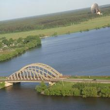
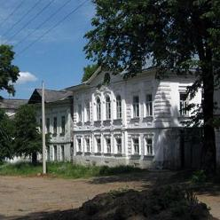
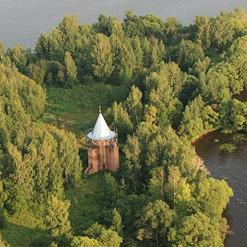

Калязин земля.
По всем вопросам обращаться по телефонам:
8 (906) 652-83-33, 8 (903) 111-24-00 (Николай):
Продается садовый дом 1-этажный, площадью 41,9 кв. метров и земельный участок сельскохозяйственного назначения для садоводства. Площадь участка 900 кв. метров. Цена 1.000.000 рублей. Адрес: Алферовское сельское поселение, сдт «Рассвет».
г. Калязин, ул.Ленина, д.66: 1147 кв. метров. На территории участка расположен цокольный этаж жилого дома. Проект жилого дома со встроенным магазином промышленных товаров имеется. Все коммуникации. | Продается участок в Семендяево: Площадь участка 953 кв. метров. Цена: 500.000 рублей, за два участка. Расположение участка: Тверская обл., Калязинский район Семендяевское сельское поселение, д. Яхромино, д. 5. | г. Калязин, ул. Чкалова, д. 23 для строительства магазина, общая площадь 753 кв. метров. На территории участка имеется объект незавершенного строительства, площадь застройки 475,1 кв.м. | ||
| Старобисловское сельское поселение, д. Светлый Луч. Площадь участка 4500 кв. метров. Старый жилой дом, площадью 30,5 кв. метров, баня новая, пруд. | Нерльское сельское поселение, с. Нерль. Возможен выбор любых площадей и расположения, в т.ч. у первой линии воды. | Большой выбор участков в деревне Хонино. Обращайтесь, мы сможем найти оптимальный и выгодный вариант. | ||
| г.Калязин, ул.Кашинская, д.9: площадь участка 2099 кв. метров. Цена 800 т. рублей. | Старобисловское сельское поселение, д. Окатово. Площадь участка 2095 кв. метров. Первая линия, река Нерль. Цена 2млн. рублей. Цена: 1 800 000р. | Старобисловское сельское поселение, д. Мякишево. Площадь участка 1800 кв. метров. Первая линия, река Нерль. Цена: 17 000 000р. |
За подробной информацией вы можете обратиться в наш офис в любое удобное время по адресу: 171573, Тверская область, г.Калязин, ул.Пухальского, д.63, второй этаж.
  